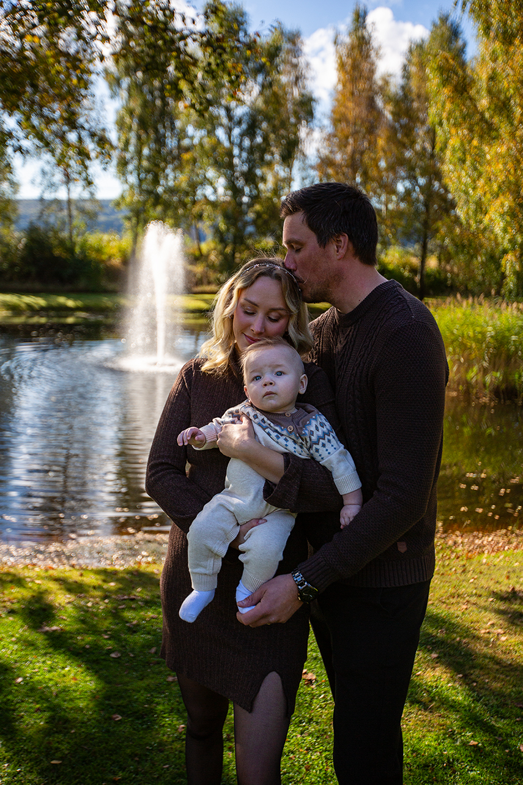
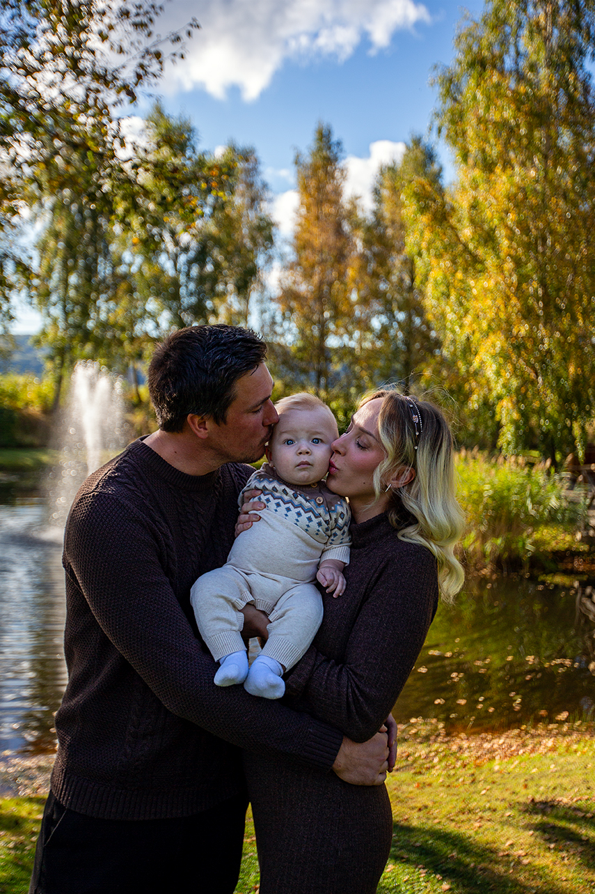

Fånga kärleken i varje litet ögonblick
Livet är fullt av små och stora ögonblick som är värda att minnas,
och min passion är att hjälpa er bevara dem.
Familjefotografering handlar om att fånga den värme och glädje som finns i era stunder tillsammans –
den där gnistan i barnens skratt, den kärleksfulla blicken mellan er som föräldrar,
eller de små händerna som griper tag i era fingrar.
Oavsett om vi möts på en äng badad i kvällssol, vid havets kant,
eller i ert eget hem, vill jag skapa en avslappnad och lekfull atmosfär där ni kan vara er själva.
Tillsammans fångar vi bilder som berättar om er familj, precis så som den är just nu –
med all kärlek, kaos och skratt.
Magin i att vänta och växa
Det finns något otroligt vackert i att vänta ett barn eller följa de första åren av ett barns liv.
En gravidfotografering handlar om att hylla den styrka och förväntan som ryms i varje andetag,
medan barnfotografering fångar det oskyldiga och lekfulla i varje leende och blick.
Jag är här för att skapa bilder som får dig att minnas hur det kändes att hålla din mage,
eller hur små de där fötterna var en gång i tiden. Med varsamhet och värme skapar jag tidlösa porträtt
som inte bara visar hur det såg ut, utan också hur det kändes. Livet går snabbt –
låt oss stanna upp och fånga det som betyder mest.
